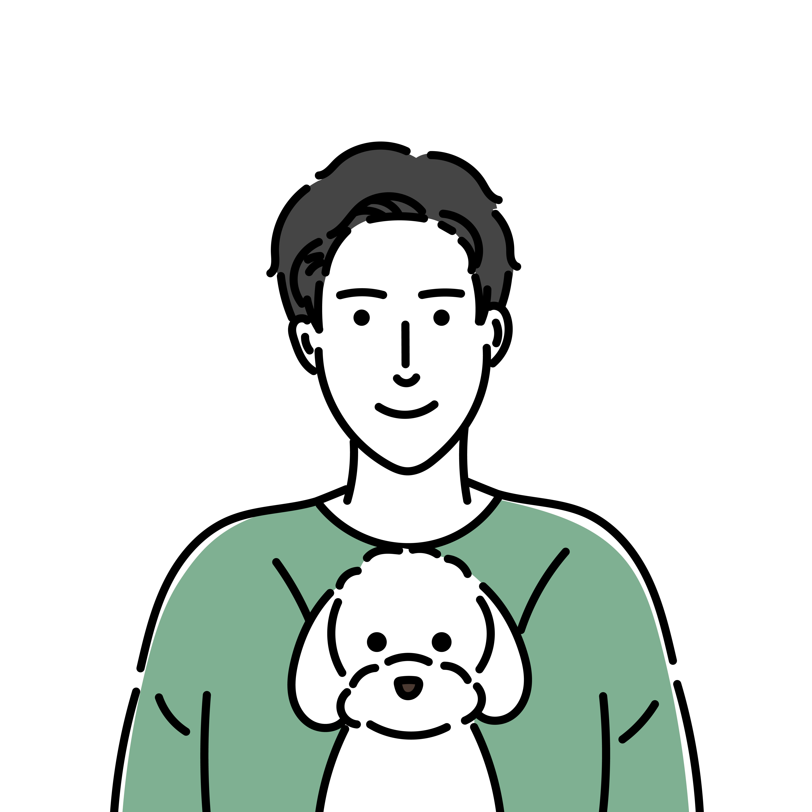

Webアプリケーション開発を軸に、バックエンド設計・実装のリード、技術的意思決定、開発チームの立ち上げを経験。大学卒業後に訪日外国人向けNPO法人を設立し事業運営を経験した後エンジニアへ転身。法人向け不動産仲介会社でのエンジニアチーム立ち上げ、フリーランスを経て、現在は株式会社グロービスにてBtoB SaaS（法人向け動画学習サービス）の開発に従事。
直近4年間はリードエンジニアとしてデータモデル設計・アーキテクチャ選定・実装を主導しながらスクラムマスターを兼務。約3億行の学習記録テーブルを扱う集計基盤の設計や、高頻度デプロイ環境（1日10〜30回）と両立するリアルタイム同期基盤のマルチクラウド判断など、ビジネスリスクを踏まえた技術的意思決定を担当。生成AIの実務活用も自ら推進し、Claude Codeを活用した高速プロトタイピング文化を社内で立ち上げ、半年で85機能のプロトタイプ開発を主導。スクラムマスターとしては開発リードタイムを60時間から37時間へ短縮（社内最速）。